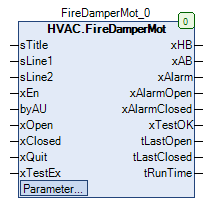

FireDamperMot (FB)¶
FUNCTION_BLOCK FireDamperMot
Kurzbeschreibung¶
Steuerung einer motorischen Brandschutzklappe mit zwei PositionsrückmeldungenZusatzfunktionen: Funktionstest der BrandschutzklappeTypische Anwendung: Steuerung einer Brandschutzklappe in einer RLT-Anlage
Darstellung¶

Funktionsbeschreibung¶
Allgemeines¶
Dieser Funktionsbaustein steuert eine binäre motorische Brandschutzklappe( xEn = TRUE ), überwacht die Laufzeiten während des
Öffnungs- und Schliessvorgangs und kann einen vollständigen Brandschutzklappentest durchführen.
Der Funktionsbaustein kann entweder im Normalbetrieb oder im Testbetrieb betrieben werden.
Der Testbetrieb ist gegenüber dem Normalbetrieb höher priorisiert und kann durch eine ansteigende Flanke am Eingang xTestEx
und / oder am Sollwert / Parameter xRunTest ausgelöst werden.
Freigabe Öffnung / Schliessung der Brandschutzklappe vor Handübersteuerung xAB¶
Die Freigabe Öffnung / Schliessung der Brandschutzklappe vor Handübersteuerung xAB wird unverändert von der
Anforderung Öffnung / Schliessung der Brandschutzklappe xEn übernommen, falls der Brandschutzklappentest nicht aktiv ist.
Freigabe Öffnung / Schliessung der Brandschutzklappe nach Handübersteuerung xHB¶
Die Freigabe Öffnung / Schliessung der Brandschutzklappe nach Handübersteuerung xHB entspricht der
Freigabe Öffnung / Schliessung der Brandschutzklappe vor Handübersteuerung xAB zusätzlich erweitert um ein Handübersteuermodul
xAB eManModeB xHB Hinweise FALSE eMANBIN.Auto FALSE Handübersteuermodul in Automatik TRUE eMANBIN.Auto TRUE Handübersteuermodul in Automatik X eMANBIN.ManOn TRUE Handübersteuermodul in Handbetrieb Ein X eMANBIN.ManOff FALSE Handübersteuermodul in Handbetrieb Aus
Legende: X = beliebig
Sammelstörung xAlarm¶
Die Sammelstörung xAlarm wird aktiviert ( = TRUE ), falls mindestens eine der nachfolgend beschriebenen Bedingungen gegeben ist:
1) Die Störmeldung für die Rückmeldung der Öffnung xAlarmOpen ist aktiv ( = TRUE ).
2) Die Störmeldung für die Rückmeldung der Schliessung xAlarmClosed ist aktiv ( = TRUE ).
3) Der Normalbetrieb ist aktiv und gleichzeitig ist die Brandschutzklappe nicht vollständig geöffnet ( xOpen = FALSE ).
( Hintergrund: Jede nicht vollständig geöffnete Brandschutzklappe stellt im Normalbetrieb einen fehlerhaften Zustand dar ).
In alle übrigen Fällen ist die Sammelstörung xAlarm nicht aktiviert ( = FALSE ).
Freigabe / Sperrung der Störmeldung für die Rückmeldung der Öffnung xAlarmOpen¶
Die Überwachung der Laufzeit der Klappe während des Öffnungsvorgangs auf einen einstellbaren Maximalwert ( tOpen ) startet,
falls im Normalbetrieb mindestens eine der nachfolgend beschriebenen Bedingungen erfüllt ist:
1) Es wird eine ansteigende Flanke ( FALSE > TRUE ) am Ausgang xHB erkannt ( = Regelfall ).
2) Die Anforderung zur Öffnung ist aktiv ( xEn = TRUE ) und gleichzeitig wird am Eingang xQuit eine ansteigende Flanke ( FALSE > TRUE ) erkannt.
3) Der Ausgang xHB ist aktiv ( = TRUE ) und gleichzeitig wird eine abfallende Flanke ( TRUE > FALSE ) am Eingang xOpen erkannt.
Die Störmeldung für die Rückmeldung der Öffnung xAlarmOpen wird aktiviert ( = TRUE ), falls nach dem Ablauf der maximalen Laufzeit tOpen
bei aktivem Ausgang ( xHB = TRUE ) mindestens eine der nachfolgenden Bedingungen erfüllt ist:
1) Die Rückmeldung der vollständigen Öffnung ist nicht aktiv ( xOpen = FALSE ) ( = Regelfall ).
2) Die Rückmeldungen xOpen bzw. xClosed haben denselben Zustand.
Die Störmeldung für die Rückmeldung der Öffnung xAlarmOpen wird deaktiviert ( = FALSE ), falls am Eingang xQuit eine ansteigende Flanke ( FALSE > TRUE ) erkannt wird.
Freigabe / Sperrung der Störmeldung für die Rückmeldung der Schliessung xAlarmClosed¶
Die Überwachung der Laufzeit der Klappe während des Schliessvorgangs auf einen einstellbaren Maximalwert ( tclose ) startet,
falls im Normalbetrieb mindestens eine der nachfolgend beschriebenen Bedingungen erfüllt ist:
1) Es wird eine abfallende Flanke ( TRUE > FALSE ) am Ausgang xHB erkannt ( = Regelfall ).
2) Die Anforderung zur Schliessung ist aktiv ( xEn = FALSE ) und gleichzeitig wird am Eingang xQuit eine ansteigende Flanke ( FALSE > TRUE ) erkannt.
Die Störmeldung für die Rückmeldung der Schliessung xAlarmClosed wird aktiviert ( = TRUE ), falls nach dem Ablauf der maximalen Laufzeit tClose
bei nicht aktivem Ausgang ( xHB = FALSE ) mindestens eine der nachfolgenden Bedingungen erfüllt ist:
1) Die Rückmeldung der vollständigen Schliessung ist nicht aktiv ( xClosed = FALSE ) ( = Regelfall ).
2) Die Rückmeldungen xOpen bzw. xClosed haben denselben Zustand.
Die Störmeldung für die Rückmeldung der Schliessung xAlarmClosed wird deaktiviert ( = FALSE ), falls am Eingang xQuit eine ansteigende Flanke ( FALSE > TRUE ) erkannt wird.
Zeitdauer der letzten vollständigen Öffnung tLastOpen¶
Die Messung der Zeitdauer beginnt jeweils, falls mindestens eine der nachfolgend beschriebenen Bedingungen erfüllt ist:
1) Es wird eine ansteigende Flanke ( FALSE > TRUE ) am Eingang xOpen erkannt.
2) Es wird eine abfallende Flanke ( TRUE > FALSE ) am Eingang xOpen erkannt.
3) Es wird eine ansteigende Flanke ( FALSE > TRUE ) am Eingang xClosed erkannt.
4) Es wird eine abfallende Flanke ( TRUE > FALSE ) am Eingang xClosed erkannt. ( Regelfall )
5) Es wird eine ansteigende Flanke ( FALSE > TRUE ) am Ausgang xHB erkannt.
6) Es wird eine abfallende Flanke ( TRUE > FALSE ) am Ausgang xHB erkannt.
An diesem Ausgang steht nach jeder ansteigenden Flanke an der Rückmeldung der vollständigen Öffnung xOpen ( FALSE > TRUE ) die Laufzeit zur Verfügung.
Zeitdauer der letzten vollständigen Schliessung tLastClosed¶
Die Messung der Zeitdauer beginnt jeweils, falls mindestens eine der nachfolgend beschriebenen Bedingungen erfüllt ist:
1) Es wird eine ansteigende Flanke ( FALSE > TRUE ) am Eingang xOpen erkannt.
2) Es wird eine abfallende Flanke ( TRUE > FALSE ) am Eingang xOpen erkannt. ( Regelfall )
3) Es wird eine ansteigende Flanke ( FALSE > TRUE ) am Eingang xClosed erkannt.
4) Es wird eine abfallende Flanke ( TRUE > FALSE ) am Eingang xClosed erkannt.
5) Es wird eine ansteigende Flanke ( FALSE > TRUE ) am Ausgang xHB erkannt.
6) Es wird eine abfallende Flanke ( TRUE > FALSE ) am Ausgang xHB erkannt.
An diesem Ausgang steht nach jeder ansteigenden Flanke an der Rückmeldung der vollständigen Schliessung xClosed ( FALSE > TRUE ) die Laufzeit zur Verfügung.
Zeitdauer der aktuellen Öffnung / Schliessung in tRunTime¶
An diesem Ausgang steht während jeder Laufzeitmessung die aktuelle Laufzeit zur Verfügung.
Prüfung der Funktionen der Brandschutzklappe ( Testbetrieb )¶
Der Testbetrieb wird immer generell ausgelöst, falls mindestens eine der nachfolgend beschriebenen Bedingungen gegeben ist:
1) Es wird eine ansteigende Flanke ( FALSE > TRUE ) am Eingang xTestEx erkannt.
2) Es wird der aktive Zustand ( = TRUE ) am Sollwert / Parameter xRunTest erkannt. Der aktive Zustand wird unmittelbar
nach der Erkennung zurück ( = FALSE ) gesetzt.
Der tatsächliche Testbetrieb erfolgt jedoch nur, falls die Rückmeldung des Automatikbetriebs byAU ( 0 = Automatik, >0 = Handbetrieb ) den
Wert 0 enthält und gleichzeitig die Betriebsart der Handübersteuerung für den digitalen Ausgang xHB den Automatikbetrieb signalisiert
( eMANBIN = eMANBIN.Auto ).
Im Testbetrieb erfolgt eine Schliessung und anschliessende Öffnung der Brandschutzklappe, jeweils mit Laufzeitüberwachung.
Am Anfang des Testbetriebs werden die Ausgänge xAlarmOpen, xAlarmClosed und xTestOK zurück gesetzt ( = FALSE ).
Nun wird der Steuerbefehl für die Schliessung ausgelöst und die Laufzeit hinsichtlich einer Überschreitung des Maximalwerts tClosed überwacht.
Wird die korrekte Rückmeldesituation ( xClosed = TRUE und xOpen = FALSE ) ohne Überschreitung des Maximalwerts erreicht, so wird
der Ausgang xAlarmClosed nicht aktiviert ( = FALSE ).
In allen übrigen Situationen wird der Ausgang xAlarmClosed aktiviert ( = TRUE ).
Nun wird der Steuerbefehl für die Öffnung ausgelöst und die Laufzeit hinsichtlich einer Überschreitung des Maximalwerts tOpen überwacht.
Wird die korrekte Rückmeldesituation ( xOpen = TRUE und xClosed = FALSE ) ohne Überschreitung des Maximalwerts erreicht, so wird
der Ausgang xAlarmOpen nicht aktiviert ( = FALSE ).
In allen übrigen Situationen wird der Ausgang xAlarmOpen aktiviert ( = TRUE ).
Die Ergebnisanzeige für den Brandschutzklappentest xTestOK wird aktiviert ( = Prüfung erfolgreich ), falls keiner der beiden Ausgänge
xAlarmOpen bzw. xAlarmClosed aktiv ( = TRUE ) ist.
Der Testbetrieb endet automatisch, sobald die Prüfung der Brandschutzklappe beendet ist.
Voraussetzungen¶
Voraussetzung für den Einsatz des Funktionsbausteins FireDamperMot
Zur korrekten Funktion ist der Einsatz des Funktionsbausteins TimeRead mit xEn = TRUE erforderlich.
Visualisierung¶
Codesys¶
- InOut:
Scope Name Type Initial Comment Input sTitle STRING Name der Brandschutzklappe sLine1 STRING Text für die Zeile 1 sLine2 STRING Text für die Zeile 2 xEn BOOL Anforderung Öffnung / Schliessung der Brandschutzklappe ( FALSE = Schliessung, TRUE = Öffnung ) byAU BYTE 0 Rückmeldung des Automatikbetriebs ( 0 = Automatik, >0 = Handbetrieb ) xOpen BOOL Rückmeldung - Brandschutzklappe geöffnet ( FALSE = nicht geöffnet, TRUE = Ofen ) xClosed BOOL Rückmeldung - Brandschutzklappe geschlossen ( FALSE = nicht geschlossen, TRUE = Geschlossen ) xQuit BOOL FALSE Quittierung von Alarmzuständen ( FALSE > TRUE ) xTestEx BOOL FALSE Anforderung des Brandschutzklappentests ( FALSE > TRUE ) Output xHB BOOL Freigabe Öffnung / Schliessung der Brandschutzklappe nach Handübersteuerung( FALSE = Schliessung, TRUE = Öffnung ) xAB BOOL Freigabe Öffnung / Schliessung der Brandschutzklappe vor Handübersteuerung( FALSE = Schliessung, TRUE = Öffnung ) xAlarm BOOL Freigabe / Sperrung der Störmeldung für die Rückmeldungen ( FALSE = Sperrung, TRUE = Freigabe ) xAlarmOpen BOOL Freigabe / Sperrung der Störmeldung für die Rückmeldung der Öffnung ( FALSE = Sperrung, TRUE = Freigabe ) xAlarmClosed BOOL Freigabe / Sperrung der Störmeldung für die Rückmeldung der Schliessung ( FALSE = Sperrung, TRUE = Freigabe ) xTestOK BOOL Ergebnisanzeige für den Brandschutzklappentest ( FALSE = Test nicht erfolgreich, TRUE = Test erfolgreich ) tLastOpen TIME Zeitdauer der letzten vollständigen Öffnung in s tLastClosed TIME Zeitdauer der letzten vollständigen Schliessung in s tRunTime TIME Zeitdauer der aktuellen Öffnung / Schliessung in s Input tOpen TIME TIME#3m0s0ms Maximalzeitdauer für die Öffnung der Brandschutzklappe in s tClose TIME TIME#25s0ms Maximalzeitdauer für die Schliessung der Brandschutzklappe in s eManModeB eMANBIN eMANBIN.Auto Betriebsart der Handübersteuerung für den digitalen Ausgang xHB xRunTest BOOL FALSE Anforderung des Brandschutzklappentests ( FALSE > TRUE ) _StopWatch StopWatch Zugriff auf die interne Stoppuhr